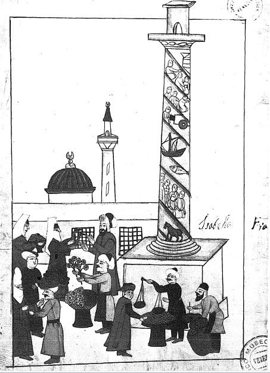
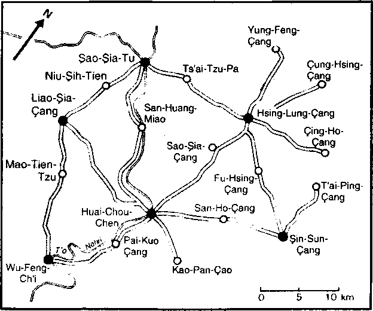
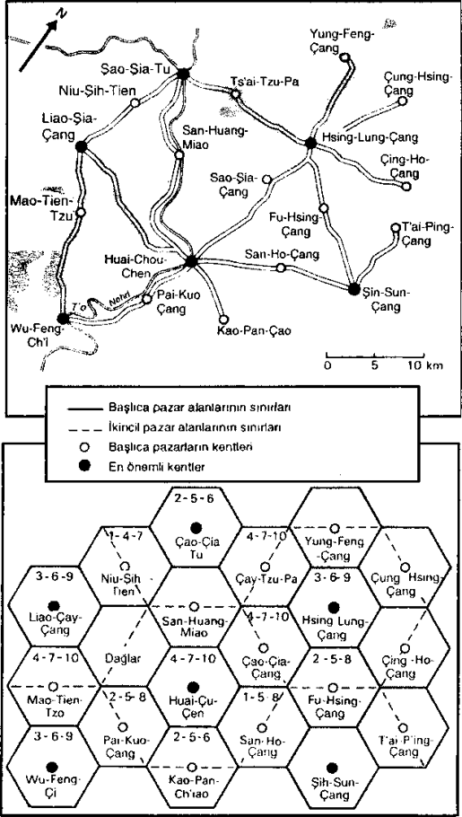

Avrupa’nın dünyanın diğer yoğun bölgelerindeki -onun gibi ayrıcalıklı insanlıkların mübadelelerle aynı aşamada olup olmadığını sormak, ortaya çetrefil bir sorun koymak demektir. Fakat üretim, mübadele, tüketim, onları şimdiye kadar tasvir ettiğimiz düzeyde, bütün insanlar için ilkel zorunluklardır; bunlar onların uygarlıklarının ne eski, ya da yeni tercihlerine, ne çevreleriyle sahip oldukları ilişkilere, ne toplumlarının doğasına, ne siyasal yapılarına, ne de gündelik hayatları üzerinde ağır basmaya hiç ara vermeyen bir geçmişe bağımlıdır. Bu ilk kuralların sının yoktur. Demek ki ilke olarak, bu düzeyde benzerlikler, farklılıklardan daha fazla olmak zorundadır.
Uygarlıkların tüm oikumene’si pazarlarla delinmiş, üzerine dükkânlar serpilmiştir. Kara Afrika veya Avrupalıların ilk Amerika’sı gibi yarı yarıya iskân edilmiş ülkelerde bile.
İspanyol Amerika’sına ilişkin olarak, sayılamayacak kadar çok görüntü vardır. Brezilya’da Sao Paolo’da dükkânlar, daha o sıralarda bile, XVI. yüzyılın sonunda kentin ilk sokaklarının kavşağında yer almaktadırlar. 1580’den sonra, İspanya ve Portekiz taçlarının birleşmesinden yararlanan Portekizli aracılar, İspanyol Amerika’sını, kelimenin tam anlamıyla istila etmişler, hizmetleriyle onun canını sıkmışlardır. Dükkâncılar, seyyar satıcılar en zengin merkezlere, hızlı büyümüş kentlere, Lima veya Mexico’ya kadar gelmektedirler. Bunların dükkânları, tıpkı Avrupa’nın ilk tuhafiyecilerininki gibi, aynı anda tüm malları birden satmaktadırlar; en harcı alem ve vasat olanların, un, kuru et, fasulye, ithal kumaşların yanı sıra, zenci köleler veya masallara layık değerli taşları da arzetmektedirler. XVIII. yüzyılın vahşi Arjantin’inde bile, gaucho’lara hizmet vermek üzere, her şeyin, özellikle de alkolün satıldığı ve kervanlarla arabacıların iaşe ettiği, demir parmaklıklı dükkânlar olan puiperia yükselmektedir.
İslam alemi, en mükemmelinden aşırı kalabalık pazarlar ve bugün bile, büyük kentlerin ünlü suklarında görülen, sokak ve uzmanlık dalı olarak gruplanmış dar kent dükkânları ülkesidir. Hayal edilebilecek tüm pazarlara burada rastlanılmaktadır: bazıları surların dışında ve geniş sergilere sahip olup, kentin anıtsal kapılarında, “artık tam anlamıyla kente ait olmayan ve köylülerin kente yakın olmalarına rağmen fazla korkmadan dolaşmalarına karşılık, kentlinin artık kendini güvenlikte hissetmediği” muazzam tıpalar meydana gelmekte; kentin içinde yer alan diğerleri, İstanbul’daki Bazestan (Bedesten) gibi büyük binaları işgâl etmedikleri zaman, kentin dar sokaklarıyla meydanlarına olabildiğince yayılmaktadırlar. Surların içinde pazarlar ve piyasalar uzmanlaşmıştır. Sevilla’da, Granada’da daha İslam egemenliği zamanından kalma -ve Bağdat’la- çok erkenden oluşmuş emek piyasalarının varlığı işaret edilmektedir. Basit buğday, arpa, yumurta, ham ipek, pamuk, yün, balık, odun, yoğurt pazarları sayılamayacak kadar çoktur. El Makrızi’ye göre Kahire’nin içindeki pazar sayısı 35’ten az değildir. Bunlardan biri, hiç değilse sarraflar için borsa rolü oynamakta mıdır? Yakınlarda yayınlanan bir kitabın ileri sürdüğü budur (1965).

İstanbul'da Küçük Pazar, Venedik civico Correr Müzesinde, minyatür
Kısacası, Avrupa pazarının tüm çizgileri burada yer almaktadır: vergisi için gereken parayı sağlama kaygısıyla kente gelen ve pazardan şöylesine bir geçen köylü; iş bitirici, faal ve yasaklamalara rağmen kırsal satıcının karşısına çıkan perakendeci, ah- çının sürekli olarak sunduğu pişmiş yemeklerin rahatça yenilebildiği pazarın toplumsal cazibesi, “kebaplar, nohut yemekleri veya kızarmış börek”.
Çok erkenden para ekonomisine av olan Hind’de, merak uyandırıcı olan, ama düşündükten sonra olağan gelen bir olay olarak, pazarı olmayan hiç bir köy yoktur. Bunun sebebi, birbirlerinden daha kan emici olan, topraklarından oturmayan senyörlere ve Büyük Moğol’a karşı ödenmesi gereken cemaat yükümlülüklerinin paraya dönüştürülmesi, sonra da hak sahibi kimse, ona pay ödenmesinin zorunlu olmasıdır. Bu iş için ya buğday, ya pirinç, ya da boya bitkileri satmak gerekmektedir ve her zaman işbaşında olan Banyan tüccar, işleri kolaylaştırmak ve bu arada kâr sağlamak için, oracıkta bulunmaktadır. Kentlerde pazar ve dükkân kaynamaktadır. Ve her yerde, Çin tarzındaki dönemli bir zenaatkârlık, hizmetlerini sunmaktadır. Bugün bile, seyyar demirciler aileleriyle birlikte, arabalarla dolaşmakta ve biraz pirinç veya başka bir yiyecek karşılığında hizmetlerini sunmaktadırlar. Hindli veya yabancı gezgin satıcılar da sayılamayacak kadar çoktur. Yorulmaz çerçiler olan Himalaya Şerpaları, Malaka yarımadasına kadar gitmektedirler.
Ancak, sıradan Hind pazarlarının bütünü hakkındaki bilgilerimiz kötüdür. Bunun tersine, Çin pazar hiyerarşisi tamamen aydınlıktır. Çin, muazzam canlı kitlesi içinde, en azından 1914’e kadar, eski hayatın binlerce çizgisini, birçok başka toplumdan daha iyi muhafaza etmiştir -hatta II. Dünya Savaşının ertesine kadar. Bugün tabii ki, bu eski kalıntıları bulmak için geçtir. Ama G. William Skinner, 1949’da Se- Çuan’da hâlâ canlı bir geçmişi ve hem bol, hem de kesin bulunan işaretlerini gizlemekteydi; bunlar geleneksel Çin hakkında mükemmel bir bilgi kaynağı meydana getirmekteydiler.
Avrupa’da olduğu gibi, Çin’de de köy pazarı nadir, uygulamada ise yoktur. Buna karşılık, tüm kasabaların pazarı vardır ve Cantillon’un sözü -bir kasaba bir pazarla belirlenir- XVIII. yüzyıl Fransa’sı için olduğu kadar, Çin için de geçerlidir. Kasaba pazarı haftada iki veya üç kere kurulmakta, “hafta" Güney Çin’de olduğu gibi on günden meydana geldiğinden, bu sayı hep üç olmaktadır. Bu, ne kasabanın uyduları olan 5-10 köyün halkı, ne de kaynakları sınırlı olan pazar müşterileri tarafından aşılması olanaklı bir sınırdır. Olağan olarak beş köylüden yalnızca biri pazara devam etmektedir, yani ev veya hane başına bir kişi. Birkaç ilkel dükkân, her insanın ihtiyacı olan küçük malları sağlamaktadır: iğne, kibrit, fitilli lamba yağı, mum, kâğıt, buhur, süpürge, sabun, tütün... Tabloyu çayhane, pirinç rakısının satıldığı meyhane, eğlendiriciler, akrobatlar, meddahlar, arzuhalciler ve eğer bu rolü bir senyör oynamıyorsa, borç ile tefeci dükkânlarını unutmadan tamamlayalım.
Kasaba pazarlarının hemen birbirlerinin ardından gelmemesi ve bunlardan hiç birinin, bağımlı oldukları kentte pazar kurulduğu günlerde açılmamasını ayarlayan çok kesin bir geleneksel takvimin kanıtladığı üzere, bu ilkel pazarlar birbirlerine bağlıdır. Bu aralıklar, seyyar bir ticaret ve zenaatın unsurlarına, kendi takvimlerini ayarlama olanağı vermektedirler. Çerçiler, taşıyıcılar, perakendeciler, zenaatkârlar, hepsi de sürekli bir yer değiştirme halinde olan bu insanlar, bir pazardan diğerine, kentten bir kasabaya, sonra bir başkasına vs. geçmekte ve sürekli bir hareket halinde, tekrar başlamak üzere, kente dönmektedirler. Sefil kuliler bilinçli olarak başkalarını almak üzere, satacakları malları sırtlarında taşımakta, minik, çoğu zaman önemsiz fiyat farklarından yararlanmaya çalışmaktadırlar. Emek piyasası sürekli olarak dolaşım halindedir; zenaatkâr dükkânı ise, bir bakıma gezgincidir. Demirci, marangoz, çilingir, doğramacı, berber ve birçok diğeri doğrudan pazarda istihdam edilmekte ve sonra pazarın “sıcak” günlerini izleyen “soğuk” günler esnasında kendi işyerlerine geri dönmektedirler. Pazar, bu buluşmalar aracılığıyla, sonuç olarak köylü hayatına ritmini vermekte, oraya kendi duraklama ve faaliyet zamanlarını sokmaktadır. Bazı ekonomi unsurlarının gezginciliği, ilkel bazı zorlamalara cevap vermektedir: zenaatkâr oturduğu kasaba, hatta köyde kendine tam zamanlı çalışma olanağı sağlayacak müşteri kitlesini bulamazsa, “hayatım sürdürmek için” yer değiştirmektedir. Çoğunlukla, aynı zamanda imal ettiklerinin satıcısı da olması nedeniyle, stoğunu tazelemek için aralara ihtiyacı vardır ve devam ettiği pazarların takvimine göre, hangi aralıklarla hazır olması gerektiğini bilmektedir.

ÇİN’İN ÖRNEK PAZARLARI
Seçuan’ın 19 kasabası (6 tanesi kent sayılmaktadır) olan bir bölgesinin haritası. Bu bölge Çeng Tu kentinin 35 ve 90 km. Kuzeydoğusunda yer almaktadır. Bu harita ve izleyen iki harita, G. William Skinner, “Marketing and social structure in Rural China”, Journal of Asian Studies, Kasim 1964, s. 22 - 23’ten alınmıştır.
Birinci şema: kalın çizgilerle oluşturulan çokgenlerin herbir tepesinde, merkezde yer alan kasaba veya kentin müşterisi olan bir köy düşünmek gerekir. Bu ilk geometrinin üstünde, altı kentsel pazar, kenarları kesikli çizgilerle belirtilen ve her tepesini bir kasabanın oluşturduğu daha geniş çokgenlerin merkezinde yer almaktadır.

İkinci şema: aynı şemanın basitleştirilmiş hali olup, Walter Christaller ve August Lösch’e göre, matematik coğrafyanın teorik modelinin iyi bir resmini oluşturmaktadır, (metin içindeki açıklamalara bkz.
Kentte, merkezi pazarda mübadeleler başka bir boyuta sahiptirler. Mallar ve yiyecekler buraya kasabalardan gelmektedir. Ama kent kendi hesabına, onu çevreleyen veya üzerine doğru sarkan başka kentlere bağlıdır. Kent, yerel ekonomiyi açıkça yabancı hale gelmeye başlayan, onu dar çevresinden çıkartarak, ona nadir, değerli, orada bilinmeyen malların geldiği, dünyanın geniş hareketine bağlayan unsurdur; kent bu malları daha alt pazar ve dükkânlara doğru yaymaktadır. Kasabalar toplumun içinde köylü kültür ve ekonomisine dahildirler, kentler bu çerçeveden kopmaktadırlar. Böylece, G. W. Skinner Çin uygarlığının köylerde değil de, köy gruplaşmalarında doğduğunu ileri sürebilir; bu gruplaşmaların zirve noktası ve bir ölçüye kadar da düzenleyicisi, kasabadır. Bu matris geometrisini fazla uzağa götürmemek gerekir, ama gene de söyleyecek sözü olmuştur.
Fakat G. W. Skinner’ın en önemli işareti, taban unsurunun, yani kasaba pazarının etki alanının ortalama yüzölçümüne ilişkindir. Bu bakış açısının genel gösterimini, 1930’lar civarındaki Çin’de yapmıştır. Gerçekten de, eğer taban model, Çin topraklarının tümüne aktarılacak olursa, “altıgenlerin" veya altıgen benzerlerinin yüzölçümlerinin nüfus yoğunluğunun işlevinde değiştikleri görülmektedir. Eğer km2’ye nüfus yoğunluğu 10’un üzerindeyse, bu altıgenlerin alanı, en azından Çin’de 185 km2 civarında olmaktadır; 20 gibi bir nüfus yoğunluğuna yaklaşık 100 km2’lik bir yüzölçümü tekâbül etmekte ve böyle sürüp gitmektedir. Bu korelasyon birçok şeyi aydınlatmaktadır: çeşitli gelişim aşamalarını işaret etmektedir. Hayati pazar merkezleri iskân yoğunluğunu, ekonominin canlılığını (özellikle taşımacılığı düşünüyorum) izleyerek, birbirlerine az çok yaklaşmış olmalıdırlar. Ve belki de Vidal de la Blache ve Lucien Gallois zamanındaki Fransız coğrafyacılarının kafasını karıştırmış olan bu sorunu böyle koymak daha iyi olacaktır. Fransa, ilk birimler olan belli sayıda “ülke” halinde bölünmektedir, bunlar aslında birçok altıgenin oluşturduğu gruplardır. Öte yandan, bu ülkeler sınırlarının hareketliliği ve belirsizliğinden çok, sürekli kök salmalarıyla dikkat çekicidirler. Fakat bunların yüzeylerinin, zaman içinde nüfus yoğunluklarının değişmesiyle birlikte farklılık göstermiş olması mantıklı değil midir?
Savaşın bizden henüz çok gençken aldığı büyük tarihçi J. C. Leur’ün pedlars, Hind Okyanusunun ve Endonezya ile Filipinlerin sıradan çerçileri olarak tasvir ettiği bu satıcılar, bizi çok farklı bir evrene götürmektedir; ben kendi hesabıma bu satıcılarda, bazen toptancıları bile aşan, üst bir mertebeden unsurları görmekteyim. İtibar farkı o kadar muazzamdır ki, insanı şaşkınlığa düşürebilir: bu biraz Batı’da kırsal bir kasaba ile bir açık hava borsasını birbirinden ayırmakta güçlük çekilmesi gibi bir şeydir. Fakat çerçi vardır, çerçicik vardır. Yelkenlilerin musonun yardımıyla, muazzam Hind Okyanusunu ve Pasifiği çevreleyen denizlerin bir kıyısından ötekine taşıdıkları, sonra da ilke olarak zenginleşip veya iflas ettikten sonra hareket noktalarına geri getirdikleri, acaba J. C. van Leur’ün hemen Endonezya, Filipinler ve Asya’nın bütününün ticaretinin düşük hacmine ve hareketsizliğine hükmederek sonuca varmak üzere, öne sürdüğü gibi, gerçekten sıradan pedlarlar mıdır? İnsan bazen buna evet deme eğilimine kapılmaktadır. Batı için hiç alışılmamış olan bu tüccarların gürültüsü, kuşkusuz çerçiliğin küçük hacimleriyle kıyaslama yapmayı kolayca tahrik etmektedir. Örneğin 22 Hazİran 1596’da, Hollandalı Houtman’ın Ümit Burnunu dönen dört teknesi, uzun bir seyirden sonra, Java’da Bantam limanına gelirler. Bir satıcı bulutu teknelere çıkar ve “sanki bir pazardaymışçasına”, mallarının yanına çömelirler. Javalılar ülkelerinin taze ürünlerini, kümes hayvanları, yumurta, meyva; Çinliler muhteşem ipekliler ve porselenler; Türk, Bengalli, Arap, Guceratlı tüccarlar Doğu’nun tüm ürünlerini getirmişlerdir. Bunlardan biri, bir Türk, ülkesine, İstanbul’a dönmek üzere gemilerden birine binecektir. Van Leur için Asya ticaretinin, tıpkı Roma imparatorluğu döneminde olduğu gibi, küçük mal hurcunu evinden uzaklara taşıyan gezgin satıcıların ticaretinin görüntülerinden biri buradadır. Roma’dan bu yana hiç bir şey yerinden kıpırdamamıştır. Hiç bir şey, daha uzunca bir süre kıpırdamayacaktır.
Bu görüntü muhtemelen yanıltıcıdır. Her şeyden önce “Hind’den Hind’e” ticaret trafiğinin tümünü özetlememektedir. Daha XVI. yüzyıldan itibaren, bu hareketsiz olduğu söylenilen mübadelelerde göz kamaştırıcı bir yükselme meydana gelmiştir. Hind Okyanusu gemileri giderek yükte daha fazla ağır, pahada hafif mallar olan buğday, pirinç, odun, tek ürün bölgesi köylülerine yönelik sıradan pamuklu dokuma getirmeye başlamışlardır. Demek ki, sadece tek bir kişiye emanet edilen birkaç değerli mal söz konusu değildir. Zaten Portekizliler, sonra Hollandalılar, daha sonra da İngilizler ve Fransızlar, orada yaşayarak, “Hind’den Hind’e’” ticaretten zenginleşme olanaklarını lezzetli bir şekilde öğrenmişlerdir ve örneğin Hollanda kumpanyasında 35 yıl hizmet ettikten sonra, 1687’de Hindlerden dönen D. Braems’in raporundan, Hollandalıların içine dahil olmayı becerdikleri, ama icat etmedikleri, kesişen ve birbirlerine bağımlı olan bütün bu ticari katların ayrıntılarını izlemek çok öğretici olmaktadır.
Uzak Doğu tüccarlarının serseri serseri dolaşmalarının kesin ve basit bir nedeninin olduğunu da unutmayalım: yelkenlilerin yolculuklarını kendiliklerinden örgütleyen musonlar tarafından sağlanan muazzam bedava enerji ve dönemin başka hiç bir deniz taşımacılığının bilmediği bir kesinlikle, tüccarların randevulaşmaları.
Nihayet, bu ticaretin daha o sıralarda bile kapitalist olan biçimlerine karşı, ister istemez dikkatli olalım. Cornelius Houtman’ın Bantam’da, teknelerinin güvertesinde çömeldiklerini gördüğü her ulustan tüccarlar, tek ve aynı ticari kategoriye mensup değillerdir. Bazıları -muhtemelen en az sayıda olanları kendi hesaplarına yolculuk yapmakta ve Van Leur’ün hayal ettiği basit modele, Yukarı Orta Çağ’ın tozlu ayaklar’ının modeline dahil olmaktadırlar (ileride döneceğimiz üzere, bunların, bazı kesin örneklerden itibaren yargılanacak olursa, daha çok başka bir tüccar tipini akla getiriyor olmalarına rağmen). Diğerleri ise, bizzat Van Leur’ün işaret ettiği üzere, hemen her zaman bir özelliğe sahip olmaktadırlar: onların arkasında, sözleşmeyle bağlı oldukları büyük tüccarlar vardır, fakat burada da, sözleşme tipleri farklılaşmaktadır.
Van Leur’ün pedlar’ları, Hind’de, Endonezya ve Filipinler’de ya Banyan veya müslüman zengin bir tüccar veya bir armatörden, ya da bir senyör veya yüksek devlet memurundan ticaretleri için gereken tutarları borç almışlardır. Bunlar olağan durumda, geminin batması hariç, alacaklılarından aldıklarının iki katını ödemeyi üstlenmektedirler. Kendileri ve aileleri bunun güvencesidir: başarmak, ya da borçlarını ödeyinceye kadar, alacaklının kölesi olmak, sözleşme hükümleri böyledir. İtalya ve başka yerlerde olduğu gibi, bir commenda sözleşmesinin karşısında bulunuyoruz, ama buradaki hükümler daha katıdır; yolculuk süresi ve faiz haddi çok büyüktür. Fakat eğer bu çok sert koşullar kabul ediliyorsa, bunun nedeni, tabii ki fiyat farklarının muazzam, kazançların olağan olarak çok yüksek olmasıdır. Uzun mesafe ticaretinin çok büyük akımları üzerinde bulunuyoruz.
Muson teknelerinde yer alanlar arasında bulanan ve İran ile Hind arasında çok sayıda olan Ermeni tüccarlar, çoğu zaman hem Türkiye, Rusya ve Avrupa’da, hem de Hind Okyanusunda iş yapan İsfahanlı büyük tüccarların adamlarıdır. Bu durumda sözleşmeler farklıdır: bu cins tüccarlar, başlangıçta kendilerine teslim edilmiş olan sermayeyle (para ve mal) yapacakları tüm muamelelerden elde edecekleri kârın çeyreğini alacaklar, geri kalanı, hoca denilen patrona gidecektir. Fakat bu basit görüntü, karmaşık bir gerçeği örtmektedir; bu gerçek, bu Ermeni tüccarlardan birinin, Lizbon Ulusal Kütüphanesinde bulunan ve kısaltılmış çevirisi 1967’de yayınlanan hesap defteri ve yolculuk not defteri tarafından dikkat çekici bir şekilde aydınlatılmaktadır. Metin ne yazık ki tam değildir. İşlerin nihai bilançosu yoktur, bu bize kârlar hakkında kesin bir fikir verebilirdi. Fakat belge bu haliyle de olağanüstüdür.
Gerçeği söylemek gerekirse, David oğlu Ohannes’in yolculuğunda, her şey bize olağandışı gözükmektedir.
-Uzunluğu: onu İsfahan’ın Ermeni mahallesi Culfa’dan, Surat’a, sonra Tibet’teki Lhassa’ya kadar, binlerce kilometre boyunca izliyor ve Surat’a geri dönmeden önce tüm molalarına ve karmaşık yollarına katılıyoruz;
Süresi, 1682’den 1693’e kadar 11 yıldan fazla süren bu yolculuğun 5 yılı kesintisiz olarak Lhassa’da geçmiştir;
-Yolculuğunun sonuçta normal, sıradan karakteri: onu hocalarına bağlayan sözleşme, 1765’te, hemen hemen bir yüzyıl sonra bile, Astrakan Ermenileri kanunnamesinde yer alan örnek bir sözleşmedir;
-Yolcunun Şiraz, Surat, tabii ki Agra’da, ama aynı zamanda Patra’da, ama aynı zamanda Nepal’in göbeğinde, Katmandu’da, nihayet Lhassa’da, durakladığı her yerde, başka Ermeni tüccarlar tarafından ağırlanması, onların yardımını görmesi, onlarla ticaret yapması, onların işlerine ortak olması olgusu;
-Ticaretini yaptığı malların dökümü de olağanüstüdür: gümüş, altın, değerli taşlar, misk, indigo ve diğer boya ürünleri, yünlü ve pamuklu kumaşlar, kandil, çay vs. -ve ticaretin hacmi de olağanüstüdür: bir keresinde iki ton indigo, Surat’ın kuzeyine kadar taşınmış ve Şiraz’a gönderilmiştir, bir keresinde 100 kilo kadar gümüş, bir başka seferinde Çin’in uzak sınırındaki Sining’e kadar uzanarak, orada altın karşılığında gümüş değiştiren Ermeni tüccarlardan elde edilen 5 kg. altın -bu çok kârlı bir işlemdir, çünkü Çin’de gümüşe, Avrupa’ya nazaran daha yüksek bir bedel ödenmekledir: Ohannes’in def terinin işaret ettiği l’e 7 güzel bir kâr anlamına gelmektedir.
Daha da ilginç olanı, bu işleri, yalnızca hocasının kendine emanet ettiği sermayeyle gerçekleştirmemesidir, ama gene de ona bağlı kalmakta ve ona ait işlemleri, her ne olurlarsa olsunlar, defterine işlemektedir. Diğer Ermenilerle, kişisel sözleşmelerle bağlantılar kurmakta, kendi sermayesini kullanmakta (belki de bu onun kâr payıdır), bundan fazlası, borç almakta, gerektiğinde borç vermektedir. Sürekli olarak, nakit paradan mala ve kambiyo senetlerine geçmektedir; bu senetler onun varlığını sanki bir hava yoluymuş gibi, bazen kısa bir mesafede aylık % 0.75 gibi düşük bir tarifeden -kendi işlerine az çok bağlı mallar söz konusu olduğunda-; bazen de, uzun mesafeler ve ülkelerarası fon aktarımları söz konusu olduğunda, çok yüksek tarifelerden, örneğin Surat’tan İsfahan’a bir dönüşte olduğu gibi, % 20-25’ten taşınmaktadırlar.
Örneğin netliği, ayrıntıların kesinliğiyle vurgulanan numune değeri, Hind’deki ticaret ve kredi kolaylıkları hakkında beklenmedik bir fikir vermektedir. Bu ülkede mübadele ağları çok çeşitlenmiştir ve hocanın sadık adamı, sadık hizmetkâr ve becerikli tüccar Ohannes bunlara kolaylıkla katılmakta, değerli veya sıradan, hafif veya ağır malların ticaretini yapmaktadır. Kuşkusuz yolculuk yapmaktadır, ama neresi bir çerçiye benzemektedir? Eğer ne pahasına olursa olsun bir kıyaslama istenirse, benim aklıma daha çok, sürekli hareket halinde olan, handan hana giderek, şurada bir işi, başka yerde bir diğerini bağlayan, fiyatlara ve fırsatlara göre şu veya bu meslekdaşıyla ortaklık kuran ve kendi yolunda hiç sapmadan ilerleyen, private market'ın şu yeni İngiliz tüccar tipi gelmektedir. Hep Orta Çağ İngiliz pazarının eski kurallarını sarsala- yan bir yenileştirici olarak sunulan bu tüccar, benim için, Ohannes’in yolculuk defteri boyunca rastlanılan şu işadamlarına daha yakın bir görüntü sunmaktadır. Şu farkla ki, İngiltere; İran, Kuzey Hindistan, Nepal ve Tibet’in birbirlerine eklenen boyutlarına sahip değildir.
Bu örnek boyunca, aynı zamanda, XVI. yüzyıldan XVIII. yüzyıla kadar İran’da, İstanbul’da, Astrakan’da veya Moskova’da yerleşik olarak görülen şu Hindli tüccarların -bunlar kesinlikle pedlar değillerdir- rolleri de daha iyi anlaşılmaktadır. Veyahut, XVI. yüzyılın sonundan itibaren Doğulu taccarları Venediğe, Ancona’ya, hatta Pesaro’ya, ve izleyen yüzyılda Leipzig ve Amsterdam’a sürükleyen şu itme gücü de daha iyi anlaşılmaktadır. Söz konusu olanlar yalnızca Ermeniler değildir. Nisan 1589’da, önlimanı Malamocco’dan ayrılan Ferrara adındaki navede, İtalyan (Venedikli, Lombard ve Floransak) tüccarların yanı sıra “Ermeniler, Doğu Akdenizliler, Ciprienler (Kıbrıslılar), Candiotelar (Giritliler), Maruniler, Suriyeliler, Gürcüler, Rumlar, Kuzey Afrikalılar, İranlılar ve Türkler" bulunmaktadır. Bütün bu tüccarlar, kesinlikle Batılılarınkiyle aynı model içinde ticaret yapmaktadırlar. Bu aynı tüccarlara, tıpkı Venedik ve Ancona noter incelemelerinde olduğu kadar, Amsterdam Bankasının kemer altlarında da rastlanmaktadır. Hiç de sıla hasreti çekiyor gibi değillerdir.
Hindistan’da, tüm yerleşim yerlerinde banker-sarraflar bulunmaktadır, bunlar özellikle Banyanların güçlü ticari kastına mensup saranlardır. Nitelikli bir tarihçi olan İrfan Habib (1960) Hindu sarrafların sistemlerini Batı’nınkiyle karşılaştırmıştır. Biçimler belki farklıdır: bir yerden diğerine veya daha doğrusu, bir sarraftan diğerine, tamamen özel bir ağ varmış izlenimi alınmaktadır; bunlar bildiğimiz kadarıyla, fuarlar veya borsalar gibi kamusal organizmalara başvurmamaktadırlar. Fakat aynı sorunlar benzer araçlarla çözülmektedir: kambiyo senedi (hundi), para değiştirme, nakit para ile ödeme, kredi, deniz sigortası (birma).
Hindisan XIV. yüzyıldan itibaren oldukça canlı ve belli bir kapitalizm üzerinde yol almaya hiç ara vermeyecek parasal bir ekonomiye sahiptir -ama bu kapitalizm toplumun tüm hacmini kapsamayacaktır-.
Sarrafların bu zincirleri o kadar etkindir ki, İngiliz kumpanyasının aracıları -bunlar kumpanya hesabına olduğu kadar, kendi hesaplarına da, “Hind’den Hind’e” ticaret yapma hakkına sahiptirler-, tıpkı Hollandalıların (ve onlardan önce Portekizlilerin) Kyoto’da Japonlardan veya nakit sıkıntısına düşen hıristiyan tüccarların Halep veya Kahire’deki müslüman ve yahudi ödünç vericilerden borç almaları gibi, sürekli olarak saraf kredisine başvurmaktadırlar. Hindli sarraf, tıpkı Avrupalı “banker” gibi, çoğu zaman büyük maceralara da borç veren veya taşımacılıkla uğraşan bir tüccardır. İçlerinde, masallardaki gibi zengin olanları vardır: örneğin Surat’da, 1663’e doğru Virji Vora 8 milyon rupiye sahipti, müslüman tüccar Abdülgafur, bir yüzyıl sonra, aynı miktarda sermaye ile, her biri 300-800 ton olan ve sadece ona ait olan 20 tekneye sahipti ve bunlarla, tek başına India Company kadar iş yapabileceği iddia edilmekteydi. Ve simsar olarak hizmet verenler ve kendilerini Avrupalıların Hindlerde yaptıkları işlerde zorunlu aracılar olarak dayatanlar, Hindistan’ın XVII. ve XVIII. yüzyıllarda büyük miktarlarda ihraç ettiği dokumaları taşıyan ve bazen kendileri de dokutturanlar (örneğin Ahmedabad’da), Banyanlardır.
Hindistan’ı ve Filipinler ile Endonezya’yı uzun uzadıya kat’etmiş olan Fransız değerli taş tüccarı Tavernier’nin Hind örgütlenmesi ve başarısı konusundaki tanıklığı, Ohannes’inki kadar konuşkandır, çünkü o da saraf sisteminden yararlanmıştır. Fransız, Hindistan’da, hatta Hindistan dışında, terim yerindeyse yanında nakit olmaksızın ne kadar kolaylıkla yolculuk yapılabileceğini açıklamaktadır, borç almak yeterlidir. Yolculuk yapan herhangi bir tüccar için, örneğin Golconda’da, Surat’ta ödemek üzere borç almakta, sonra da, orada yeniden ödünç alarak borcunu başka bir yere aktarmaktan ve bunu bu minval üzere sürdürmekten daha basit bir şey yoktur. Ödeme, bizzat ödünç alanla birlikte yer değiştirmektedir ve alacaklı (daha doğrusu birbirlerine kefil olan alacaklılar zinciri) ancak son aşamada parasını alacaktır. Bu, Tavemier’nin “eskiyi yeniyle ödemek" dediği şeydir. Tabii ki, bu geçici kurtuluşun bedeli her seferinde ödenmektedir. Bu cins avanslar, sonunda Avrupa’da ödenen “kambiyolar üzerinde” toplanmaktadır: bunlar birbirlerine eklenmekte ve fiyatları, borç alan alışılmış dolaşım yollarından uzaklaştıkça yükselmektedir. Banyan ağı fiili durumda, Hind Okyanusunun bütün piyasalarına ve ötelerine yayılmaktadır, fakat Tavernier yolculuklarda “Golconda’dan Livorno veya Venediğe kadar kambiyo için kambiyo para alınınca, paranın en ucuz durumda % 95’e geldiğinin, ama % 100’e çıktığının hesabım hep yaptım” diye bir kesinleme getirmektedir. % 100, gezgin tüccar tarafından Java’da, Hind’de veya Güney Çin’de, işine sermaye yatıranlara ödenen cari faiz haddidir. Göz kamaştırıcı bir had, ama bunun ancak ekonomik hayatın en yüksek gerilim katları için, uzun mesafeli kambiyo sistemi için önemi vardır. Kanton’da XVIII. yüzyılın sonunda, tüccarlararası cari faiz haddi %18 veya 20’dir. Bengal’deki İngilizler, hemen hemen Ohannes’inkiler kadar yüksek hadden, yerel olarak borç almaktadırlar.
Hind Okyanusunun gezgin tüccarını ikincil bir oyuncu olarak görmemek için bir neden daha: tıpkı Avrupa’da olduğu gibi, uzak mesafe ticareti, Uzak Doğu’nun en yüksek kapitalizminin kalbinde yer almaktadır.
Doğu’da ve Uzak Doğu’da, Amsterdam ve Londra’dakiler gibi kurumsallaşmış borsalara veya Batı’nın faal piyasaları gibi bir şeye rastlanmamaktadır. Buna karşılık, büyük tüccarların oldukça düzenli toplantıları mevcuttur. Bunlar her zaman farkedilmemektedir, ama Venedikli büyük tüccarların Rialto köprüsünün kemerleri altında, yakındaki pazarın şamatası içinde sakin bir şekilde dolaşan insanlar halinde yaptıkları toplantılar da aynı derecede gizli değiller midir?
Buna karşılık, fuarlar hiç yanılmaksızın tanınmaktadırlar. Hindistan’da fuar kaynamaktadır, İslam aleminde ve Filipinler ile Endonezya’da bunlar önemli bir rol oynamaktadırlar; Çin’de ise mevcut olmalarına rağmen, ilginç bir şekilde nadirdirler.
Yakın tarihli bir kitabın (1968), “İslam ülkelerinde fuarların bulunmadığı”nı ileri sürdüğü doğrudur. Fakat kelime buradadır: İslam aleminin tümünde, mausim (mevsim), aynı anda hem fuarı, hem mevsim bayramını ifade etmekte, hem de bilindiği üzere, Hind Okyanusunun devreyi rüzgârlarını işaret etmektedir. Muson, sıcak denizlerin Uzak Doğu’sunda, deniz yolculuklarının şu yönde veya tersindeki tarihlerini sarsılmaz bir şekilde ayarlayarak, tüccarların uluslararası buluşmalarını sağlamakta veya kesintiye uğratmakta değil midir?
1621 tarihli ayrıntılı bir rapor, dar ama çok zengin bir ticaretin buluşma yeri olan Moka’daki bu buluşmalardan birini tasvir etmektedir. Muson her yıl, Kızıldeniz’in bu limanına kadar (burası ileride büyük kahve pazarı haline gelecektir) Hindli, Endonezyalı, Filipinli ve Afrika’nın komşu kıyısına ait belli sayıda tekneyi, insanlar ve mal balyalarıyla aşırı yüklü olarak getirmektedir (bu gemiler bugün de aynı yolculukları yapmaktadırlar). Raporun yazıldığı yıl iki Dabul (Hindler) teknesi gelir, birinde 200, diğerinde 150 yolcu vardır; bunların hepsi, değerli mallarından küçük miktarları iskelede satacak olan tüccarlardır: karabiber, sakız, lak, abelbent, altın katılmış veya elde boyanmış kumaşlar, tütün, ceviz, müskat, karanfil, kamfre, santal tahtası, porselen, misk, indigo, müstahzarat, kokular, elmaslar, Arap sakızı... Bunların karşılığı, Süveyş’ten gelen ve buluşma yerine varan tek bir teknedir; bu tekne uzun süre, yalnızca İspanyol sekizlik sikkeleriyle dolu olmuştur; daha sonra buna mallar, yünlü kumaş, mercan, keçi tüyü kumaşlar eklenmiştir. Süveyş teknesi herhangi bir nedenle zamanında gelemezse, olağan olarak buluşmayı vurgulayan fuar tehlikeye girmektedir. Müşterilerinden yoksun kalan Hindli, Endonezyalı ve Filipinli tüccarlar, hangi fiyata olursa satmak zorundadırlar, çünkü acımasız muson, gerçekten meydana gelmemiş olsa bile, fuara son vermektedir. Surat veya Mazulipatam'dam gelen tüccarlarla, Basra veya Hürmüz'de buna benzer buluşmalar örgütlenmektedir, tekneler buralarda dönüş için Şiraz şarabı veya gümüşten başka hiç bir yük almamaktadırlar.
Tüm Magrib’te olduğu gibi Fas’ta da, yerel evliyalar ve hac ziyaretleri aşırı boldur. Fuarlar bunların koruması altında kurulmaktadır. Kuzey Afrika’nın en fazla ziyaret edilen fuarlarından biri, Anti-Atlas dağlarının güneyinde, boşluğun ve çöl altınının karşısında Guzzulaların ülkesinde yer almaktadır. Burayı bizzat ziyaret etmiş olan Afrikalı Leon, onun XVI. yüzyılın başındaki önemini işaret etmekteydi; bu fuar uygulamada günümüze kadar sürmüştür.
Fakat İslam topraklarında en faal fuarlar Mısır’da, Arabistan’da, a priori olarak beklediğimiz şu kavşak olan Suriye’de kurulmaktadırlar. İslam aleminin ticari bütünü, XII. yüzyıldan itibaren, tırnaklarım çok uzun süredir İran Körfezi ve Bağdat’a geçirmiş olan egemen eksenden koparak, ağırlık merkezini Kızıldeniz’e doğru kaydırmış, burada ticaretinin ve başarılarının ana hattını bulmuştur. Buna, büyük bir kervan buluşma yeri olan Suriye’deki Mzbeib fuarına parlaklığını veren, kervan trafiğinin gelişimi de eklenmektedir. Bir İtalyan tüccarı olan Ludovico de Varthema, 1503’te Mekke’ye gitmek üzere, 35.000 devesi olan bir kervanla “Mezaribe”den ayrılır. Zaten Mekke’deki hac, İslam dünyasının en büyük fuarıdır. Aynı tanığın söylediği gibi, buraya "parte... per mercanzie et parte per peregrinazione" gelinmektedir. Bir tanık 1184’te buranın istisnai zenginliğini tasvir etmekteydi: “dünyanın hiç bir malı yoktur ki, bu buluşmada bulunmasın”. Zaten haccın fuarları, çok erkenden ticari ödemelerin takvimini saptamışlar ve bunların telâfilerini örgütlemişlerdir.
Mısır’da deltanın şu veya bu kentinde, canlı, küçük yerel fuarlar, Kıpti geleneklerine bağlanmaktadırlar. Hatta bunlar hıristiyan Mısır’ın da öncesine, putatapar Mısır’a kadar geri gitmektedirler. Koruyucu azizler, bir dinden öbürüne geçildikçe, yalnızca adlarım değiştirmişlerdir: bunlarla ilgili bayramlar (mülid), çoğu zaman olağandışı bir pazarın kurulmasını vurgulamaya devam etmektedirler. Örneğin, deltada yer alan Tantak’da, “veli” Ahmed el-Bedevi’ye tekâbül eden mülid, bugün bile kalabalıkları biraraya getirmektedir. Fakat büyük ticari yığılmalar, fuarların Akdeniz ve Kızıldeniz’deki seyrüsefere bağımlı olduğu, Kahire ve İskenderiye’de meydana gelmektedir. Ve bunların yanı sıra, her şey hac ziyaretlerinin ve kervanların arap saçı gibi olan takvimine cevap vermek zorundadır. İskenderiye’de rüzgârlar, “denizin açık olması” için ancak Eylül ve Ekimde uygundurlar. Venedikliler, Cenevizliler, Floran- salılar, Katalanlar, Raguzalılar, Marsilyalılar, karabiber ve baharat alımlarını bu iki ay boyunca yapmaktadırlar. Mısır Sudan’ı ile Venedik veya Floransa arasında varılan antlaşmalar, S. Y. Labib’in dikkat çektiği üzere, mutatis mutandis Batı fuarlarını hatırlatan, bir cins fuarcı tüccar hukukunu tanımlamaktadırlar.
Bütün bunlar, fuarın İslam aleminde relativementi Batı’daki gümbürtülü önemine sahip olmamasını engellememektedirler. Bu durumu ekonomik bir geriliğe bağlamak, muhtemelen hata olacaktır, çünkü bizim Champagne fuarlarımızın döneminde, Mısır ve İslam alemi kuşkusuz Batı’dan geri değildi. Belki de bizzat İslam kentinin azameti ve yapısı burada gündeme getirilmek zorundadır? Bu kent, herhangi bir Batı kentinden daha fazla pazara ve eğer bu kelime kullanılabilirse, süpermarket’e sahip değil midir? Ve üstelik, yabancılara ayrılmış olan mahalleler, uluslararası birer sürekli buluşma yeridirler. İskenderiye’deki “Frenk” fonduğu, Kahire’de Suriyelilerinki, Venedik’teki Fondaco dei Tedeschi ye model olmuşlardır: Venedikliler tıpkı kendilerinin Mısır’daki mahallelerinde olduğu gibi, Alman tüccarlarını buraya hapsetmektedirler. İster hapishane olsunlar, ister olmasınlar, bu fonduklar müslüman kentlerinde, büyük serbest ticaret ülkesi olan ve yararsız hale gelmiş olan fuarları kendi ülkesinde erkenden öldürecek olan Hollanda’nın tanıyacağı şu “sürekli fuarlar’ı örgütlenmektedirler. Acaba Champagne fuarlarının, henüz kaba ve ilkel bir Batı’nın göbeğinde, henüz azgelişmiş ülkelerdeki mübadeleleri zorlayan bir kocakarı ilacı olduğu sonucuna mı varmak gerekir?
Yarı yarıya müslüman olan Hind’de manzara farklıdır. Fuarlar burada o kadar güçlü bir kattırlar ve her yerde o kadar hazır ve nazırdırlar ki, gündelik hayata eklemlenmekte ve manzara çok doğal hale gelmiş olduğundan, seyyahları bile şaşırtmamaktadır. Aslında bu Hind fuarları, saflaştırıcı suların kıyılarına doğru, yalpalayan bir öküz arabası kalabalığı içinde, ardı arkası kesilmeyen gezginci ve mümin nehirlerini getiren hac ziyaretleriyle karışma gibi bir sakıncaya -eğer böyle denilebilirse- sahiptirler. Birbirlerine yabancı ırk, dil ve dinlerin ülkesi olan Hindistan, birbirlerine hasım bölgelerin sınırında koruyucu tanrılara bağlanmış ve dinsel hac ziyaretleriyle bağlantıları kurulmuş bu ilkel fuarları herhalde uzun süre muhafaza etmek zorunda kalmıştır; böylece bu gibi yerleri kesintisiz komşu kavgalarının dışına çıkartmış olmaktadır. Her halükârda, bazen köylerarası olarak kurulan birçok fuarın, paradan çok, antik takasa bağlı olarak kaldığı da bir olgudur.
Tabii ki, Ganj üzerindeki büyük fuarlar olan Hardwar, Allahabad, Senpar; veya Cemma üzerindeki Mthura ve Batesar’da durum böyle değildir. Her din kendi fuarına sahiptir: Hindular Hardwar ve Benares’te; Sihler Amristar’da; Müslümanlar Pencap’taki Pahpatan’da. Bir İngiliz (general Sleeman), tabii ki abartarak, soğuk ve kuru mevsimin başından itibaren, ayinsel yıkanmalar dönemi başladığında, Himalaya eteklerinden, Camerin burnuna kadar olan bölgedeki Hindistan halkının büyük bölümünün, her şeyin satıldığı (atlar ve filler de dahil) fuarlarda toplandığını söylemekleydi. Dansların, müziğin, mümince ayinlere katıldığı bu ibadet ve bol yiyecek, içecek günlerinde, gündelik hayattan kopuk olarak yaşamak kural haline gelmekteydi. Her oniki yılda bir, Jüpiter gezegeni Aquarius’un işareti altına girdiğinde, bu göksel işaret çılgınca bir hac ve ona bağlı fuar tufanına yol açmaktadır. Ve korkunç salgın hastalıklar meydana gelmektedir.
Filipinler ve Endonezya adalarında, şurada veya burada, deniz kentlerinde veya hemen onların sınırlarında, uluslararası denizciliğin yığdığı tüccarların uzun birliktelikleri, uzatılmış fuar kisvesine bürünmektedir.
Hollandalıların Batavya’nın kurulması sırasında (1619) ve hatta daha sonraları buraya gerçekten yerleşmelerinden önce, “Büyük” Java’nın başlıca kenti, adanın batı ucunda, kuzey kıyılarında, bataklıkların ortasında yer alan Bantam’dır; kent kırmızı tuğladan surların içine sıkışmıştır, aslında kimsenin kullanmayı bilmediği tehditkâr toplar kentin burçlarının üzerinde yer almaktadırlar. Surların içinde, alçak, çirkin, “Amsterdam kadar büyük” bir kent yer almaktadır. Krallık sarayından çıkan üç yol birbirlerinden uzaklaşmakta ve ulaştıkları meydanlar satıcı kaynamaktadır, bunlar kümes hayvanları, papağan, balık, büyük et parçaları, sıcak çörekler, arak (rakı), ipekliler, kadife, pirinç, değerli taşlar, altın tel... satmaktadırlar. Birkaç adım daha atılırsa, dükkânları, tuğladan evleri ve kendine özgü pazarıyla Çin mahallesine varılmaktadır. Kentin doğusunda, daha sabahın köründe küçük satıcıların doldurduğu Büyük Meydan yer almakta; tekneleri sigorta eden, karabiber stoklayan, büyük ticari maceralara kredi açan, çok çeşitli dil ve paralara aşina büyük tüccarlar daha sonra toplanmaktadırlar; meydan onlar için borsa görevini görmektedir, diye yazmaktadır bir seyyah. Ancak, kentte her yıl musonu bekleyerek, kilitlenmiş olarak kalan yabancı tüccarlar, burada aylarca süren, bitimsiz bir fuara katılmaktadırlar. Java’da uzun süreden beri mevcut olan ve daha uzun bir süre de kalacak olan Çinliler, bu toplantıda önemli bir rol oynamaktadırlar. Bir seyyah (1595) “bunlar tefeci yollarla borç veren ve Avrupa’daki Yahudilerinkiyle aynı üne sahip olan ilgili kişilerdir. Ellerinde terazi tüm ülkeyi dolaşmakta, buldukları tüm karabiberi satın almakta ve bir kısmını tarttıktan sonra (numune üzerine satışa ilişkin bu ayrıntıya dikkat ediniz), miktar hakkında yaklaşık bir fikir elde etmektedirler (herhalde ağırlık demek gerekir), bunun karşılığını, satanların ihtiyacına göre, blok halinde para vererek karşılamaktadırlar; bu yolla o kadar büyük bir miktar toplamaktadırlar ki, bununla Çin teknelerini yükleyebilirler; bu tekneler geldiğinde, kendilerine oniki bine bile malolmamış olanı, elli bin ca'ixas’a (sapek) satmaktadırlar. Bu tekneler Bantam’a Ocak ayında gelmekte, sekiz veya on tane olmakta ve 45 veya 50 tonilato çekmektedirler” diye kaydetmektedir. Böylece, Çinlilerin de bir “Doğu ticaretleri” vardır ve Çin’in uzak mesafe ticaretinin uzun süre, Avrupa’nın uzak mesafe ticaretinden kıskanacağı bir şey olmamıştır. Marco Polo’nun zamanında, onun söylediğine göre, Çin uzaktaki Avrupa’dan yüz kat daha fazla baharat tüketmektedir.
Çinlilerin, daha doğrusu yerleşik komisyoncuların kırsal alandan olan alımlarını musondan önce, gemilerin gelmesinden önce yaptıkları kaydedilmiştir. Gemilerin gelmesi, fuarın başlangıcıdır. Fiili durumda, Filipinler ve Endonezya adaları alanının tümünü karakterize eden budur: musonun ritmine tabi, uzun süreli fuarlar. Sumatra adasındaki Atjeh’de (Achem), Davis (1598) “her türden malın fuarının yapıldığı üç büyük meydan” görmektedir. Bu sadece bir lâftan ibarettir diyebilirsiniz. Fakat François Martin de Saint Malo (1603) bu aynı manzaraların karşısında, büyük bir pazarı sıradan pazarlardan ayırmaktadır; burası garip meyvalarla doludur ve tanığımız dükkânlardaki, Hind Okyanusunun her bir yanından gelmiş satıcıları tasvir etmektedir; bunların “hepsi Türk tarzına göre giyinmişlerdir” ve “mallarını satmak üzere, adı geçen yerde altı ay kadar kalmaktadırlar”. Bu altı ayın “sonunda yeni satıcılar gelmektedir”. Yani sürekli ve yenilenen bir fuar, bu fuar Batı fuarlarının içine düştükleri hızlı bunalım görüntüsüne hiç de sahip olmadan, zaman içinde tembelce yayılmaktadır. Atjeh’e 1688’de gelen Dampier daha da kesindir: “Çinliler burada ticaret yapan satıcıların en önemlileridir; içlerinden bazıları bütün yıl burada oturmakta, ama diğerleri yılda ancak bir kere gelmektedirler. Bu sonuncular buraya bazen Hazİran ayında, çok miktarda pirinç ve diğer ürünler taşıyan 10-12 yelkenliyle gelmektedirler... Hepsi de kentin bir kıyısında, deniz kenarında olmak üzere, birbirlerine yakın evlerde oturmaktadır... ve bu mahalleye Çin tarlası adı verilmektedir... Bu filoyla birlikte birçok zenaatkâr da gelmekte, bunların arasında doğramacılar, marangozlar, ressamlar bulunmakta ve bunlar gelir gelmez çalışmaya başlayarak, sandıklar, mücevher kutuları, yazı masaları ve Çin’in her türlü küçük işlerini yapmaktadırlar”. Böylece iki ay boyunca “Çinli fuarı” kurulmuş olmakta, herkes buraya alış veriş yapmaya veya talih oyunları oynamaya gitmektedir. “Çinlilerin malları satıldıkça, bunlar daha az yer işgal etmekte ve daha az ev kiralamaktadırlar... satışları azaldıkça, oyunları artmaktadır”.
Çin’in kendinde, ortaya başka bir şey çıkmaktadır. Burada her şey bürokratik, her yerde hazır ve nazır, etkin, ilke olarak ekonomik ayrıcalıklara düşman bir hükümet tarafından sıkı bir şekilde elde tutulduğu için, fuarlar serbest pazarlara nisbeten, çok yakın bir gözetim altında tutulmaktadırlar. Fakat fuarlar gene de, trafiğin ve mübadelelerin, Tang sülalesinin sonlarına doğru (IX. yüzyıl) güçlü bir atılım yaptığı dönemde, erkenden ortaya çıkmışlardır. Burada da, genel olarak Budist veya Taoist bir tapınağa bağlanmışlardır ve tanrının yıldönümü bayramına rastgelen günde kurulmaktadırlar. Bu nedenle tapınak toplantılarının genel adı olan miao-hui, onların da adı olmuştur. Bu fuarlar halk sevincinin vurgulu bir dışavurumudurlar. Fakat başka yaygın adları da vardır. Çingler döneminde (1644-1911) Çö-Kian ve Kiang-Su eyaletlerinin sınırındaki Nan-hsün-çen’de kurulan yeni ipek ürünü fuarı hui-çang veya lang-hui adını almaktadır. Aynı şekilde nien-sih deyimi, kelimesi kelimesine Alman Jahrmarkte’lerine tekâbül etmektedir; bu Alman pazarları yıllıktır ve belki de fiili olarak büyük, kelimenin tam anlamı içindeki fuarlar yerine, büyük mevsimlik pazarları (tuz veya çay veya at pazarları, panayır) ifade etmektedir.
Etienne Balasz, bu büyük pazarların veya istisnai fuarların, özellikle Çin’in birbirlerine yabancı hanedanlar halinde bölünme anlarında ortaya çıktıklarını düşünmektedir; bu durumda parçalar birbirlerine açılmak zorunda kaldıkları için, fuarlar ve büyük pazarlar Orta Çağ Avrupa’sındaki gibi ve belki de benzeri nedenlerle ortaya çıkmaktadırlar. Fakat, Çin siyasal birliğini yeniden sağladığında, bürokratik yapısını, etkin pazar hiyerarşilerini yeniden bulmakta ve fuarlar ülkenin içinde yok olmaktadırlar. Yalnızca dış sınırlarda tutunmaktadırlar. Örneğin, yalnızca Güney Çin’e egemen olan Songlar zamanında (960-1279) “karşılıklı pazarlar”, barbarlar tarafından lethedilmiş olan Kuzey Çin’e doğru açılmaktaydılar. Mingler döneminde (1368- 1644) yeniden sağlanan ve Çingler tarafından (1644-1911) sürdürülen birlik döneminde, pencereler veya çatı delikleri yalnızca çevrede, dış dünyaya dönük olarak yer almışlardır. Böylece, örneğin 1405’ten itibaren, Mançurya sınırında at fuarları kurulacak ve bunlar sınır’ın “barbarlarca yürüttüğü ilişkilere göre açılacak veya kapanacaklardır. Bazen bizzat Pekin kapılarında, Moskof devletinden yola çıkan bir kervan buraya ulaştığında, bir fuar örgütlenmektedir. Bu tabii ki istisnaidir, çünkü batıdan gelen kervanlar, tercihan Han-çeu ve Çeng-tun fuarlarında durdurulmaktadırlar. Aynı şekilde, 1728’de, lrkutsk’un güneyinde, Çinli tüccarın değerli Sibirya kürklerini edindiği, ilginç ve önemli Kiatka fuarı kurulacaktır. Nihayet, XVIII. yüzyılda Kanton, Avrupalıların ticareti karşısında, iki fuarla donatılmıştır. Uluslararası ticarete az çok açık diğer büyük deniz limanları gibi (Ningpo, Amoy), Kanton da bu tarihte, her yıl bir veya birkaç ticari “mevsim”e sahne olmaktadır. Fakat burada hiç de, İslam alemi veya Hind’in büyük serbest buluşmalarına benzer bir şey söz konusu değildir. Fuar Çin’de kısıtlı bir olgu olarak kalmakta, özellikle yabancılara ait bazı özel ticaretlerle sınırlanmaktadır. Bunun nedeni, ya Çin’in fuarlardan kaygı duyması ve onlardan kaçınması, ya da daha muhtemel olarak, onlara ihtiyacının olmamasıdır: yönetim ve hükümet bütünlüğü, faal pazar zincirleri hesaba katıldığında, fuarlardan gönül rızasıyla vazgeçmektedir.
Pazarların ve dükkânların XIII. yüzyıldan itibaren düzenli bir şekilde örgütlenmeye başlayıp, sonra da büyüyüp, çoğaldıkları Japonya’da ise, fuar sistemi yerleşmişe benzememektedir. Ancak 1638’den sonra, birkaç Hollanda ve Çin teknesini bir yana bırakırsak, Japonya tüm dış ticarete kapanırken, Nagazaki’yi “izinli” Hollanda Doğu Hind Kumpanyası gemilerinin veya onlar da “izinli” olan Çin “jonque"larının geldiği her seferinde, bal gibi fuarlar kurulmaktadır. Bu “fuarlar” nadirdir. Fakat bu fuarlar, Moskof devletindeki Arhangelsk’te, İngiliz ve Hollanda teknelerinin gelişiyle kurulanları gibi, Japonlar için hayati önemde dengeleme işlevi görmektedirler: kendi isteğiyle “kapanmasından” sonra, bu fuarlar onun için, dünya havasını teneffüs etmenin tek yoludur. Ve aynı zamanda kendi rolünü oynamanın, çünkü dışa olan katkısı, özellikle gümüş ve bakır ihracatı, yalnızca bu tekneler aracılığıyla gerçekleşmekte ve dünya ekonomisinin devreleri üzerinde yansımalar meydana getirmektedir: 1665’e kadar gümüş devresi, 1665-1668 veya 1672’de kısa altın devresi, nihayet bakır devresi.
Görüntüler, görüntülerdir. Fakat bunlar çok sayıda, tekrarlanan ve benzer olarak, hepsi birden yalan söyleyemezler. Farklılaşmış bir evrende, birbirlerine benzeyen biçim ve performansları açığa çıkartmaktadırlar: her şeye rağmen birbirlerine benzeyen kentler, yollar, devletler, mübadeleler. Bize “ne kadar üretim aracı varsa, o kadar mübadele aracının olduğu” söylenmektedir. Fakat bu araçlar her halükârda sınırlı sayıdadırlar, çünkü her yerde aynı olan, ilkel sorunları çözmektedirler.
Demek ki, bir ilk izlenim burada elimizin altındadır: XVI. yüzyılda bile, sayının taleplerine av olan, dünyanın meskûn bölgeleri, sanki eşitlermiş veya buna çok yakınlarmış gibi, bize birbirlerine yakın olarak gözükmektedirler. Kuşkusuz üstünlüklerin ortaya çıkarak kendilerini kanıtlamaları ve sonra da bunların üstünlük haline dönüşmeleri için, yani öteki yanda da altta kalmaların, sonra da boyunduruk altına girmelerin ortaya çıkması için, küçük bir açıklık yeterli olabilir. Acaba dünyanın geri kalanı ile Avrupa arasında cereyan edeni bu mudur? Açıkça evet veya hayır demek ve birkaç kelimeyle açıklama yapabilmek güçtür. Fiili durumda, Avrupa ile dünyanın geri kalanı arasında “tarihyazınsal" bir eşitsizlik vardır. Avrupa tarihçilik mesleğini icat etmiş olduğu için, bundan kendi çıkarına yararlanmıştır. İşte her şeyi aydınlatmış olarak, tanıklık yapmaya talep etmeye hazırdır. Avrupa-dışının tarihi daha yapılma aşamasındadır. Ve bilgiler ile yorumların dengesi kurulmadıkça, tarihçi, dünya tarihinin Gordium düğümünü, yani Avrupa’nın üstünlüğünün ortaya çıkışı sorununu çözmekte tereddüt edecektir. Bu tam da Joseph Needham’ın başını ağrıtan şeydir. Çin tarihi uzmanı olan Needham, nisbeten açık olan teknik ve bilim düzleminde muazzam kişisini (Çin) dünya sahnesindeki yerine oturtmakta zorlanmaktadır. Bir şey bana kesin olarak gözüküyor, Balı ile diğer kıtalar arasındaki açıklık geç olarak açılmıştır ve onu, çağdaşlarımızın fazlasıyla çoğunun hâlâ yapma eğiliminde oldukları gibi, yalnızca pazar ekonomisinin “akılcılığı”na bağlamak, açıkçası basitleştiricidir.
Yıllar geçtikçe kendini kanıtlayacak olan bu açıklığı açıklamak, her halükârda, çağdaş dünyanın esas sorununa yanaşmak olacaktır. Bu eserin tüm uzantısı boyunca, kesin bir şekilde çözme iddiası taşımadan, zorunlu olarak yanaşılacak sorun. Bu eserde en azından onu tüm veçheleriyle ortaya koymayı, dün güç kullanarak girilmek istenilen bir kente topların yaklaştırılması gibi, açıklamalarımızı ona yaklaştırmayı denedik.